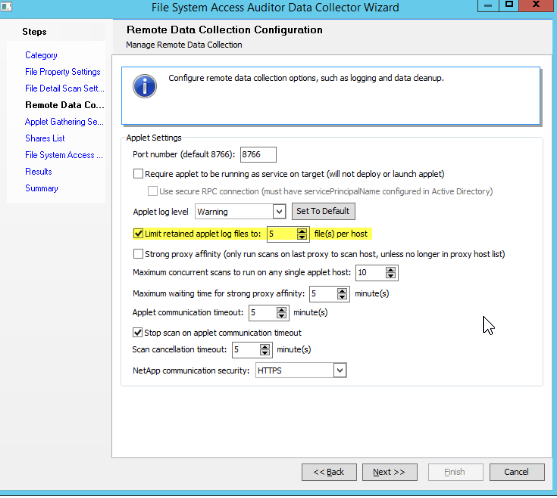
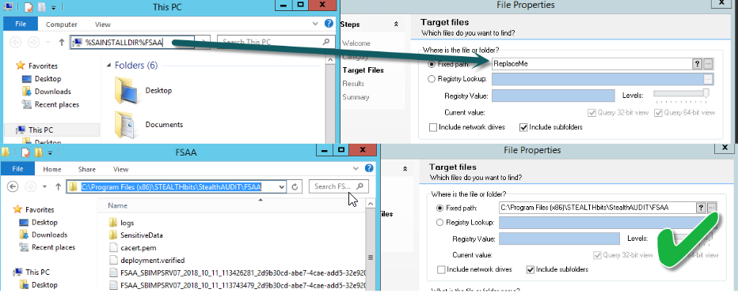
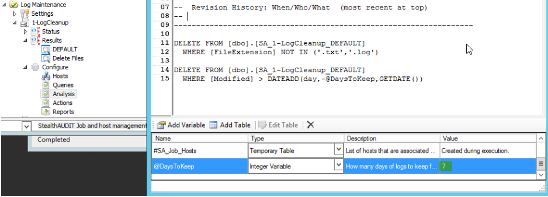

Summary: StealthAUDIT system scans for FSAA and Sensitive Data job configurations allow for some log control, but not all.
Issue: Customers often complain about disk usage of StealthAUDIT after FS scans have been running over time. While the job configuration allows for cleaning up RPC/applet logs greater than n runs, there are several logs that do not respect this rule.
Instructions: https://downloads.stealthbits.com/access/files/StealthTOOLS/AUDIT/LogMaintenance.zip
Step 1: Verify that the built in log cleanup is enabled:

This can be located in the system scan configurations for both FSAA and SEEK scans. While it is possible for the attached job to supersede this setting, it should still be best practice for customers concerned about disk space to enable it. It is also worth mentioning the potential to set the applet log level (dropdown immediately above highlighted setting) from its default to a lower level such as 'Warning'. This is not controlled by the SA global settings, and must be set here.
Step 2: Place downloaded Job group in the desired location. Anywhere in the job tree is ok, although the File System group may be the most logical choice. Ensure 'Local Host' is the selected host option.
Step 3: Configure Path. The File DC does not access Environment Variables, so the %SAINSTALLDIR% is unfortunately not usable here. You have likely already discovered the install location when importing the jobs, however you can quickly paste %SAINSTALLDIR%FSAA into windows file explorer to resolve it, then copy and paste the literal path into the query config of job "1-LogCleanup":

Step 4: Determine how many days of logs to keep. This can be set as a variable in the analysis for "1-LogCleanup". Discuss value of keeping logs vs disk usage requirements with customer to determine appropriate value. Be sure to consider how often a scans are performed. (Keeping 7 days of logs for a quarterly SDD scan that takes 9 days for example may not be the best idea.) Setting to zero will erase ALL logs.

Step 5: Run job. The job uses PowerShell to delete the files, so it should work in a customer environment whether they have the File Action module purchased or not. If customer wishes to see what files will be deleted before actually executing, run only the "1-LogCleanup" job (not the whole group) and observe the DEFAULT table in job results. The "2-DeleteFiles" will perform the execution.
Product: StealthAUDIT
Module: SA - DC - FSAA - Activity;SA - DC - FSAA - DFS;SA - DC - FSAA - Permissions
Versions: 8.1+
Dev Ticket: SAFS-15419
Legacy Article ID: 2121